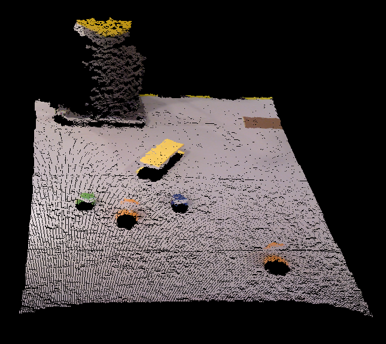
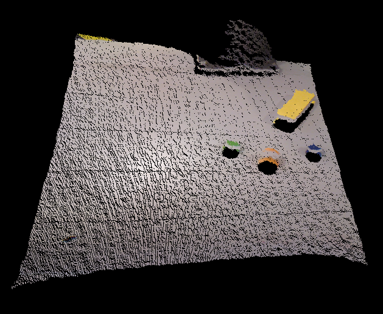
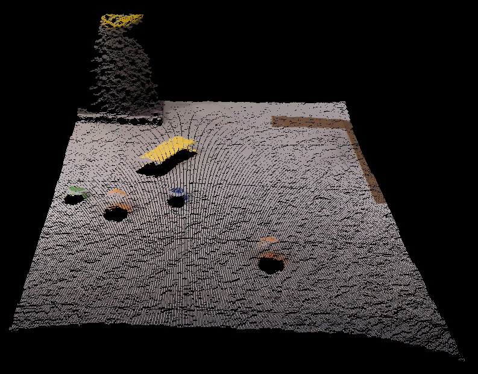
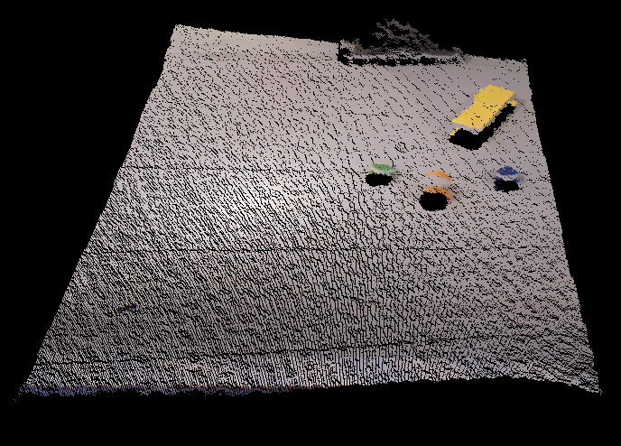
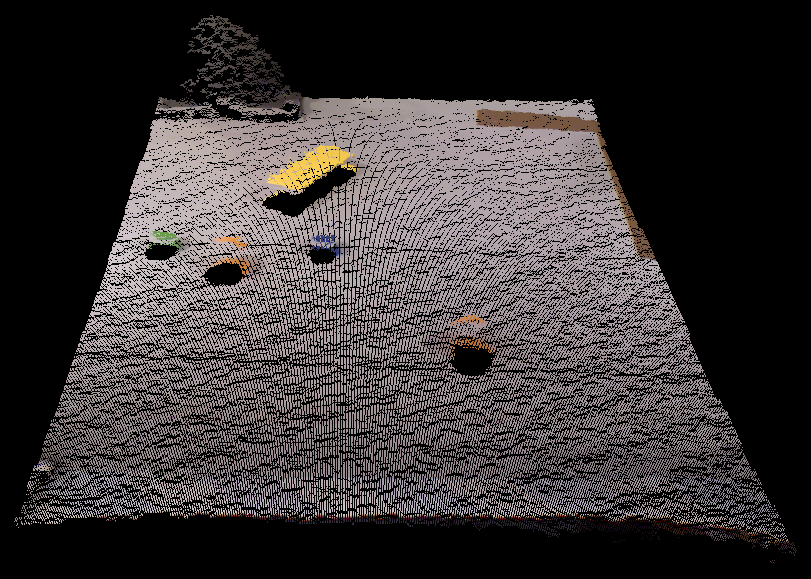
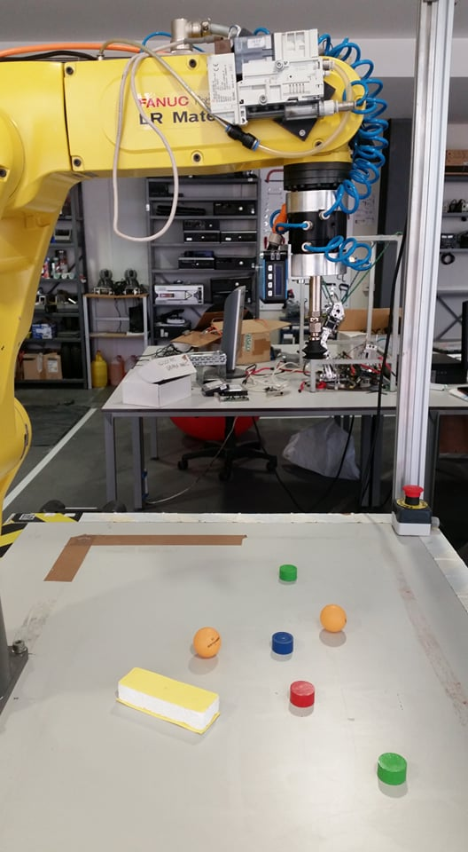
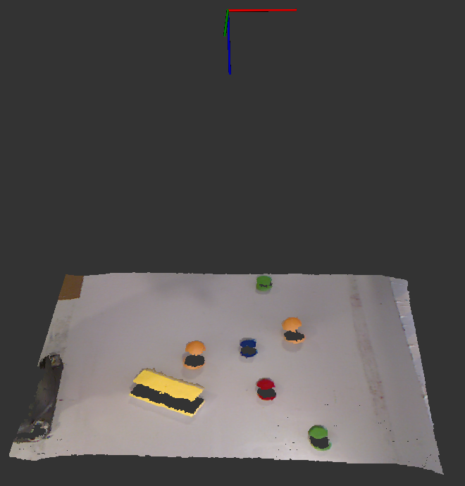
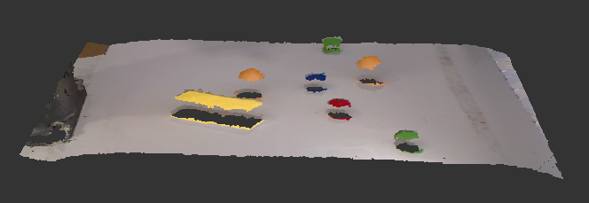

Having all the hardware correctly calibrated, and being already capable of acquiring Kinect data, the next important step is post-processing the "registered" point cloud.
Point CloudsCentral Position

   
The point cloud used to develop this process was recorded into a bag through the ros- bag package, so that the code could be written and tested without being always connected to the Kinect sensor. The recorded scene was the one presented in the next picture, together with the corresponding point cloud.
|  |  |
|---|---|
|  |
The steps of the process used to acquire the centroid and normal information of each object are listed below:
- Removal of undesired points from the point cloud, such as, points on the floor or points that represent the robot’s base;
- Identification and removal of points from the table where the objects lay;
- Clustering of the point cloud to separate the different objects;
- Determination of the centroid and normal for each cluster.
The objDetection.cpp program, contained in the source file of the project, was created to subscribe to the /camera/depth_registered/points (XYZRGB) topic published by the Kinect, invoking a callback function whenever a new message arrives to this topic. This function is the one responsible for processing the data, publishing and presenting the results.
1 - Extraction of outliers and filtering
The points which were far away from the camera, i.e., a more than 0.9 meters, along the Z direction were removed, thus removing the points beyond the table. The filter used to do this was the PassThrough. Since the process of acquiring the point cloud of the workspace will always be done with the manipulator in the same respective position, the range in the X direction necessary to remove the points from the robot’s base will always be the same.
The filter used to reduce the number of points is called VoxelGrid. This filter is used to simplify the cloud, by wrapping the point cloud with a three-dimensional grid and reducing the number of points to the center points within each block of the grid. The point cloud resulting from this type of filter is presented bellow.
2 - Extraction of the background
The next step consists of identifying and removing the background formed by the table, thus leaving only the part of the point cloud that represents the objects to grab. In order to identify the table, the SACSegmentation class does a simple segmentation of a set of points with the purpose of finding the dominant plane in a scene. After removing those points in the background it was noticeable that not all points from the table were correctly removed. In order to remove these isolated points the RadiusOutlierRemoval filter was used.
The point cloud that results from this filter is presented in following figure and it is possible to see that the only points now in the resulting point cloud belong to a specific object.
3 - Clustering
Having only the points that represent the objects to grab, the following step is to split them in different point clouds, each one representing a specific object. The clustering method used to separate and extract the objects was the Euclidean Cluster Extraction with the pcl::EuclideanClusterExtraction class. This process uses a plane segmentation algorithm to identify different surfaces, which is the same as the one used in the identification of the background, in the previous section. This clustering method is only used to separate different objects that are not in close contact with each other; in that case another class has to be used, for example the pcl::RegionGrowing explained here .
The next figure shows the different clusters, each with a distinct color, in one viewer.
4 - Calculation of each Centroid and Normal
- Firstly, the normals of all of the points of a cluster are computed using the NormalEsti- mation class;
- The second main step consists of computing the center of the surface, which will be referred to as the virtual centroid since it does not represent a point of the surface but rather the central point of all the surface’s points;
- Having the virtual centroid of the surface, the index of the cluster’s point which is closer to this virtual centroid was then determined;
- The index of the point which has the shortest distance to the virtual centroid can be now used to determine the centroid of the object’s surface. This virtual centroid computed in ii can not be used as the grasping point because, for curved surfaces like the ones obtained with the ping pong balls, this centroid will be below the interior surface instead of above the external surface. This is better visualized in the next figure in which the white point represents the virtual centroid and the red one represents the centroid of the surface which will be later the grasping point after some adjustments with the laser sensor measurement.
- Lastly, the normal of the surface’s centroid was also determined from all of the normals computed in i through the index of the point with the shortest distance to the virtual centroid.
The next figure presentes a representation of the object’s centroid and its normals in the initial point cloud.
The centroid and its normal of the first clustered object were published in the topics /cloud_centroid and /cloud_centroid_normal respectively. These have their coordinates in relation to the tf /camera_rgb_optical_frame, which is one of the frames of the Kinect sensor, and will be later transformed to be in relation to the /robot_base_link frame of the manipulator, for future manipulation.